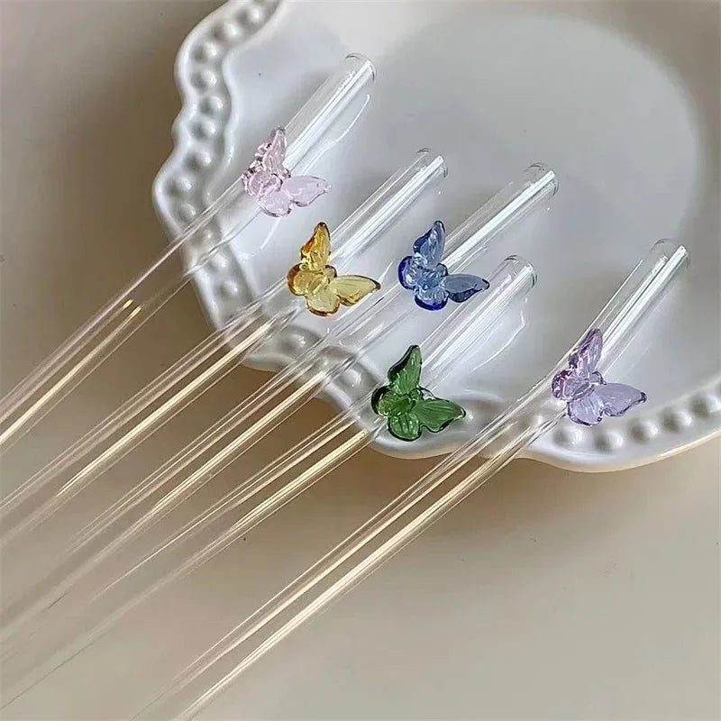
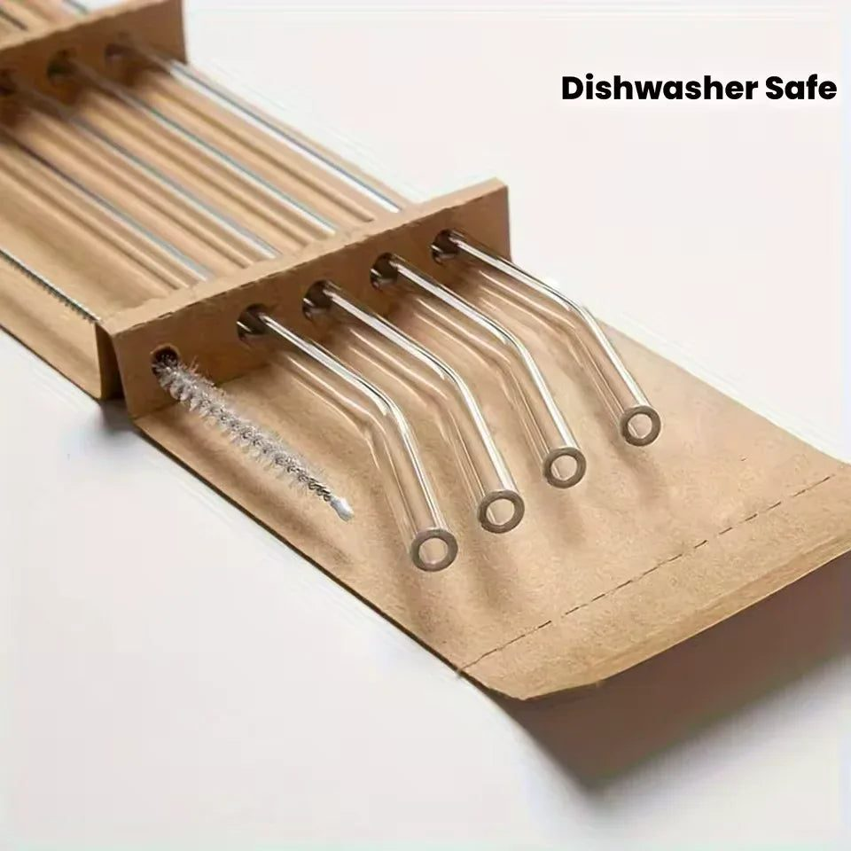
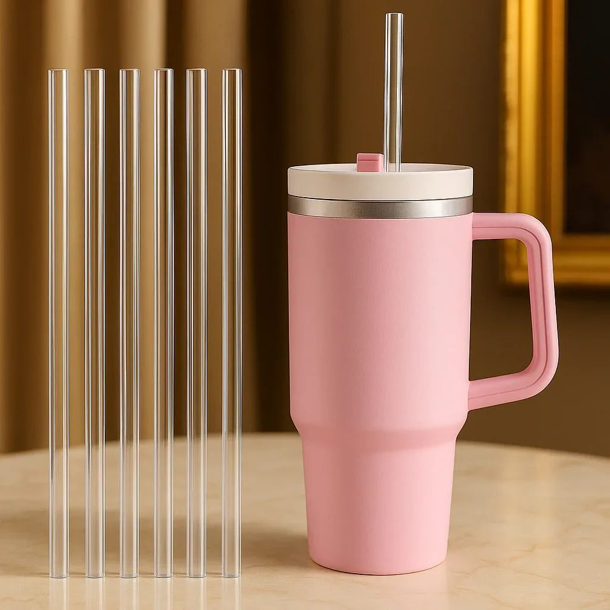

Plastic straws and open bottles create waste and spoil drinks. How reusable glass and acrylic straws and simple bottle stoppers make everyday drinking cleaner and greener.



Plastic waste is one of Pakistan's most visible environmental problems. Plastic bags and single-use items choke drains in Karachi during the monsoon, litter the banks of the Ravi, and wash up on beaches from Clifton to Gwadar. Several provinces and Islamabad have introduced rules restricting plastic bags, and many people now want to reduce waste in their own homes. Switching from disposable plastic straws to reusable ones, and using proper bottle stoppers to save half-finished drinks, are small steps that add up.
A single plastic straw seems harmless, but millions are used and thrown away every day at juice shops, cafes, school canteens and homes. They are too light and small to be recycled easily, so they end up in landfills and waterways. Children in particular love drinking through straws, so families can go through many in a week. A set of reusable straws lasts for years.
Decorative glass straws with shapes like butterflies or hearts are popular with children and make drinks feel like a treat.
Hygiene is the biggest concern with reusable straws, and it is easily managed. Rinse the straw immediately after use so juice and milk do not dry inside. Use a thin straw-cleaning brush with warm soapy water at least once a day. Glass straws can go in boiling water occasionally for a deeper clean. Let straws dry upright in a cup or holder. Most good sets include a brush; keep it with the straws so it is always used.
Large tumblers have become very popular among students and office workers in Pakistan. Many come with a straw lid, and replacement straws are useful when the originals are lost or wear out. Keep a straw in a small pouch in your bag so you can refuse plastic straws at juice shops and cafes. Many places are happy to fill your own tumbler.
Half-finished bottles of soft drinks, juice and sharbat often go flat or get spilled in the fridge. A good bottle stopper seals the bottle again, keeping drinks fresh and fizzy for longer. Stoppers are also useful for oil and vinegar bottles, glass water bottles, and homemade syrup. Silicone and rubber stoppers seal well and are easy to wash.
Change is easier when everyone is involved. Let children choose their own coloured or shaped straw so they want to use it. Keep a small jar of clean straws next to the glasses. Explain why it matters: show them pictures of plastic in the sea or in local nullahs. Children often become the strongest supporters of new habits.
Once you start, other swaps follow naturally:
None of these changes is difficult, and together they reduce the amount of rubbish your home produces each week.
Birthdays and family events generate piles of disposable cups and straws. For home gatherings, use glasses and reusable straws instead. Decorative glass straws in a jar on the drinks table look festive and guests often comment on them.
For toddlers, choose soft silicone or thick acrylic straws, and supervise young children with glass straws. Check straws regularly for chips or cracks and replace damaged ones immediately.
Glass, acrylic and butterfly straw sets, along with bottle stoppers, can be found among the reusable straw sets at Trenducts, which delivers across Pakistan. A small change at your table is a step towards cleaner streets and rivers.